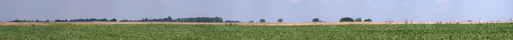

Our Last Day in Gettysburg / NK010801124811_1312a
8/1/2001

Bliss farm site
Cyclorama building
The angle (General Meade can see us!!)
Copse of trees
Roof of Codori barn
Pennsylvania Monument
Motts took us to a swale just south of the Memorial that was nearly half-way across the field but was completely out of sight of the Federal positions on Cemetery Ridge. Pickett's division formed here.